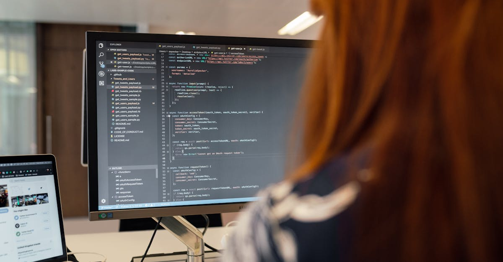

L'Écho d'un Départ : Bill Peebles et la Fin d'une Ère pour Sora chez OpenAI
L'actualité technologique a été récemment secouée par une annonce significative : Bill Peebles, la figure de proue derrière le projet Sora d'OpenAI, a quitté l'entreprise. Ce départ n'est pas anodin ; il intervient dans un contexte où OpenAI a, le mois dernier, mis en veilleuse son ambitieux outil de génération vidéo, Sora. Plus qu'une simple valse de cadres, cette décision marque un tournant stratégique majeur pour le géant de l'IA, signalant une réorientation nette de ses priorités. Faut-il y voir la fin des « side quests », ces projets audacieux mais périphériques, pour une organisation qui cherche désormais à concentrer ses ressources sur des objectifs plus ciblés et, semble-t-il, plus lucratifs ?
👉 À lire : IA : 50 films pour le prix d'un blockbuster !
Peebles, dans une note sobre publiée sur X, a exprimé sa gratitude envers Sam Altman, Mark Chen, Aditya Ramesh et Jakub Pachocki, pour avoir « fostered a research environ » propice à l'innovation. Cependant, derrière ces mots polis se dessine une réalité plus complexe : celle d'une entreprise en pleine mutation. Le développement d'une IA capable de générer des vidéos d'une qualité photoréaliste représentait une avancée technologique spectaculaire, promettant de révolutionner des secteurs entiers, du cinéma à la publicité. Mais le marché, ou du moins la stratégie d'OpenAI, semble dicter une autre voie. Que signifie ce pivot pour l'avenir de l'IA générative et pour les talents qui y œuvrent ? C'est une question qui résonne avec une acuité particulière dans un écosystème où l'efficience et la pertinence commerciale deviennent des impératifs.
👉 À lire : Canva IA 2.0 : La révolution du design par le langage
La Redéfinition Stratégique d'OpenAI : Cap sur le Code et l'Entreprise
Le départ de Bill Peebles n'est qu'une pièce d'un puzzle plus vaste. OpenAI est en pleine restructuration, cherchant à éviter les « side quests » pour se concentrer davantage sur le codage et les solutions pour entreprises. Cette orientation n'est pas le fruit du hasard, mais plutôt la réponse à une pression croissante pour monétiser la recherche fondamentale en IA et la transformer en produits concrets et rentables. Le marché de l'IA générative, bien que foisonnant, est aussi impitoyable. Les investisseurs exigent des retours sur investissement tangibles, et les entreprises clientes sont à la recherche d'outils robustes, fiables et directement applicables à leurs opérations. Le virage vers le codage et l'entreprise est donc une manœuvre stratégique visant à consolider la position d'OpenAI en tant que fournisseur de solutions d'IA essentielles, plutôt qu'en tant que laboratoire d'expérimentation aux multiples facettes.
« L'ère des projets 'pour voir' est révolue pour les géants de l'IA », analyse fictivement Dr. Élodie Dubois, économiste de la technologie. « La maturité du secteur exige une focalisation sur ce qui génère de la valeur ajoutée directe et mesurable. » Cette concentration sur le codage, par exemple, permet à OpenAI de renforcer ses modèles de langage pour le développement logiciel, un domaine où la demande est explosive. Les outils d'IA pour l'entreprise, quant à eux, offrent des opportunités de partenariats à long terme et des flux de revenus stables. Ce repositionnement stratégique souligne une prise de conscience : même les pionniers de l'IA doivent s'adapter aux réalités économiques et aux besoins pragmatiques du marché pour pérenniser leur leadership. La question n'est plus seulement de savoir si l'on peut construire une technologie, mais si cette technologie peut être intégrée efficacement dans l'économie réelle.
Les « Side Quests » : Un Luxe Que l'Innovation en IA Ne Peut Plus Se Permettre ?
La notion de « side quests » ou quêtes secondaires, évoquée par OpenAI, est révélatrice d'une évolution profonde dans la gestion de l'innovation en intelligence artificielle. Pendant longtemps, les laboratoires de recherche, y compris ceux des grandes entreprises technologiques, ont eu la latitude d'explorer des pistes audacieuses, parfois sans application commerciale immédiate, dans l'espoir de découvertes révolutionnaires. Sora en était un exemple parfait : une prouesse technique repoussant les limites de l'IA générative, mais dont la monétisation et l'intégration à grande échelle restaient à définir. Aujourd'hui, cette approche semble jugée trop coûteuse ou trop dispersante pour une entreprise comme OpenAI, engagée dans une course effrénée à l'hégémonie de l'IA.
Est-ce que cela signifie que l'innovation fondamentale est sacrifiée sur l'autel de la rentabilité ? Pas nécessairement, mais cela implique une réévaluation des priorités. Les ressources humaines et financières sont finies, même pour un acteur majeur comme OpenAI. Allouer des équipes de pointe et des budgets colossaux à des projets dont le retour sur investissement est incertain, alors que des opportunités massives existent dans le développement d'outils de codage ou de solutions d'IA pour les entreprises, devient un dilemme stratégique. Cette rationalisation des efforts est un signal fort pour l'ensemble de l'industrie : l'heure est à la consolidation, à l'efficacité opérationnelle et à la démonstration de valeur concrète. Pour les acteurs du trading de cryptomonnaies, par exemple, l'efficacité et la précision d'un agent IA sont des critères non négociables, loin de toute « quête secondaire » qui pourrait diluer sa performance. Il s'agit de concentrer chaque ligne de code, chaque algorithme, vers un objectif unique et mesurable : l'optimisation des échanges.

L'Impact sur le Paysage de l'IA Générative et Spécialisée : Qui Prendra le Relais ?
Le retrait d'OpenAI de la course directe à la génération vidéo de pointe, symbolisé par le départ de Peebles et la mise en suspens de Sora, ne signifie pas la fin de cette technologie. Au contraire, cela pourrait ouvrir des brèches pour d'autres acteurs. Des startups agiles et des entreprises plus petites, peut-être moins contraintes par les impératifs de rentabilité immédiate des mastodontes, pourraient saisir cette opportunité pour intensifier leurs efforts dans ce domaine. L'innovation en IA est un marathon, pas un sprint, et la fragmentation des efforts peut parfois catalyser des avancées inattendues. On peut s'attendre à voir émerger de nouveaux champions de la vidéo générative, profitant du vide laissé par OpenAI.
Ce recentrage d'OpenAI illustre également une tendance plus large : la spécialisation accrue dans le domaine de l'IA. Alors que certaines entreprises se positionnent comme des fournisseurs de modèles de fondation généralistes, d'autres se concentrent sur des applications verticales spécifiques. Cette dynamique est cruciale pour comprendre l'avenir de l'IA. Un agent IA qui trade les cryptos pour vous, 24h/24, n'est pas une « side quest » ; c'est une application hyper-spécialisée qui exige une concentration totale sur la performance, la sécurité et l'adaptabilité aux marchés financiers. La survie et le succès de telles solutions dépendent précisément de l'absence de dispersion des efforts, de la robustesse de leurs algorithmes et de leur capacité à délivrer une valeur ajoutée constante. Les leçons tirées de la stratégie d'OpenAI résonnent donc bien au-delà de la Silicon Valley, touchant tous les développeurs d'IA à forte valeur ajoutée.
L'Avenir de l'IA : Vers une Hyper-Spécialisation et l'Optimisation Financière ?
Le virage stratégique d'OpenAI vers le codage et l'entreprise, au détriment de projets comme Sora, n'est pas seulement un ajustement interne ; c'est un baromètre de l'évolution du marché de l'intelligence artificielle. Nous pourrions assister à une ère d'hyper-spécialisation où les modèles d'IA les plus performants seront ceux qui excellent dans des tâches très spécifiques, plutôt que des IA généralistes tentant de tout faire. Cette tendance s'aligne parfaitement avec les besoins croissants de l'économie numérique, où la précision, la rapidité et l'optimisation sont devenues des exigences absolues.
Dans le secteur financier, par exemple, l'efficacité d'un agent IA ne se mesure pas à sa capacité à générer des vidéos, mais à sa performance algorithmique sur les marchés. Un agent IA conçu pour trader les cryptomonnaies 24h/24 doit être entièrement dédié à l'analyse des données de marché, à l'exécution rapide des transactions et à la gestion des risques. Toute « side quest » ou dispersion de son focus pourrait compromettre sa rentabilité. Ce n'est pas un hasard si les plateformes comme CryptoMind AI mettent l'accent sur un agent IA qui trade les cryptos pour vous, 24h/24 : c'est l'incarnation même de cette hyper-spécialisation et de l'optimisation financière. La capacité à livrer des résultats concrets, mesurables et constants devient le critère ultime de succès pour toute solution d'IA. L'industrie de l'IA semble ainsi s'acheminer vers une maturité où la valeur est définie par l'impact direct et la capacité à résoudre des problèmes spécifiques avec une efficacité inégalée. Ce mouvement est un signal clair : l'IA est en train de passer de l'expérimentation fascinante à l'outil stratégique indispensable.

Conclusion : Un Nouveau Chapitre pour l'IA et Ses Acteurs
Le départ de Bill Peebles et la réorientation stratégique d'OpenAI marquent indéniablement un nouveau chapitre pour l'intelligence artificielle. Ce n'est pas une régression, mais plutôt une évolution vers une industrie plus mature, plus ciblée et, potentiellement, plus impactante sur l'économie réelle. En délaissant les « side quests » au profit du codage et des solutions d'entreprise, OpenAI envoie un message clair : l'heure est à la consolidation, à l'efficacité et à la génération de valeur concrète.
Cette stratégie souligne l'importance cruciale d'une focalisation sans faille pour tout projet d'IA, en particulier dans des domaines à enjeux élevés comme le trading financier. La capacité d'une IA à délivrer des performances optimales et continues, sans se laisser distraire par des objectifs secondaires, est désormais la pierre angulaire de son succès. Alors que le paysage de l'IA continue de se transformer à une vitesse fulgurante, une chose est certaine : les acteurs qui sauront allier innovation de pointe et pragmatisme stratégique seront ceux qui façonneront le futur de cette technologie révolutionnaire.